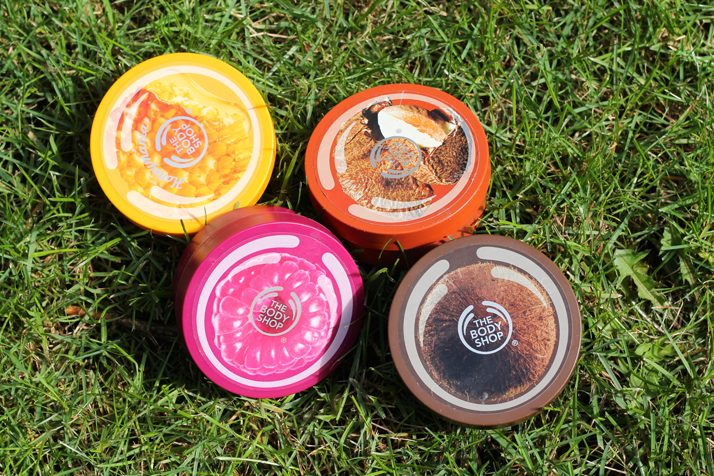
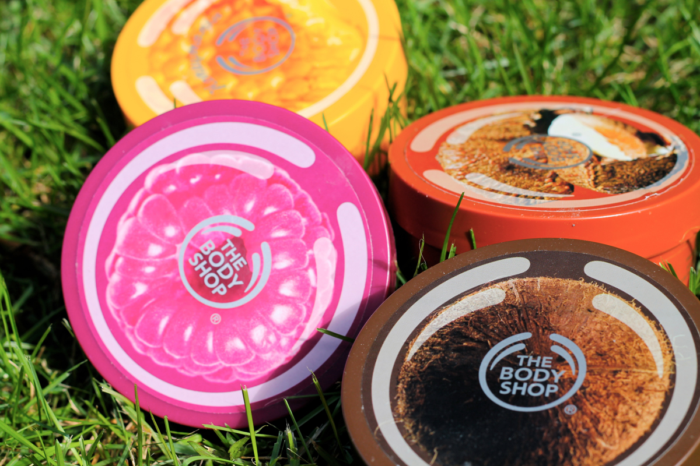
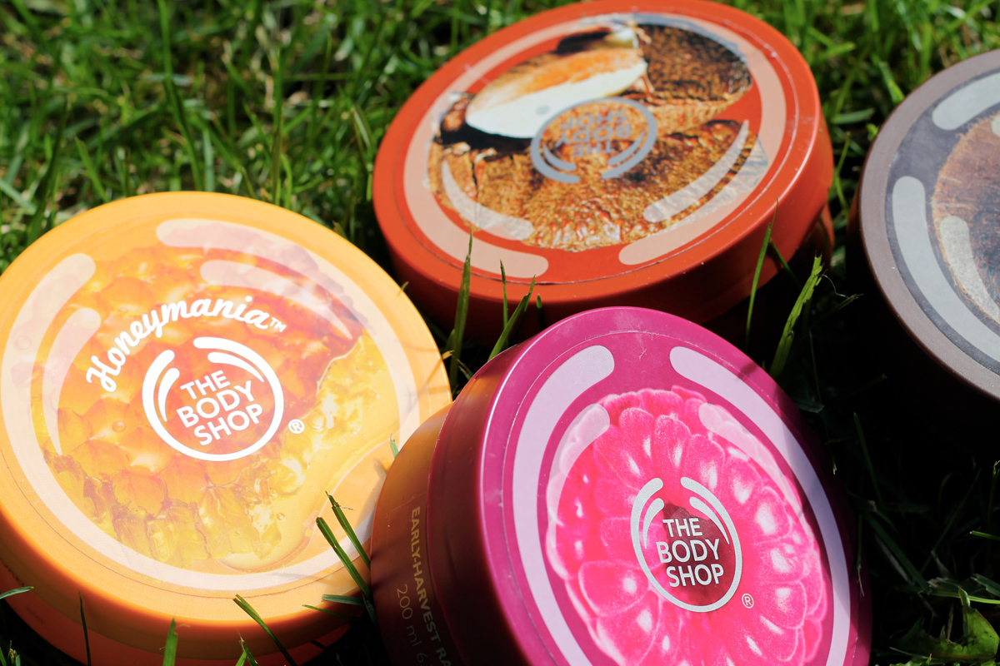

Hydratation maximale

Peau sèche et craquelée? C’est terminé! Depuis que j’ai découvert le merveilleux univers de Body Shop (et de ses multiples rabais dois-je préciser), s’en est fini de la peau sèche. Leur multitude de beurres corporels prétend donner une hydratation de 24h. J’étais un peu septique au début, mais après l’avoir essayé je n’avais plus de difficulté à le croire! La crème est riche et pénètre bien dans la peau. Et que dire des choix de senteur, plus d’une dizaine de choix différent. J’en ai essayé quatre jusqu’à maintenant et je ne saurais choisir un préféré. Noix de coco, framboises, miel, noix du Brésil, chacun a sa particularité.

Le beurre corporel à la noix de coco est par-fait pour l’été. Il est fabriqué à partir d’huile vierge de noix de coco biologique des Iles Samoa. Il me donne une peau qui sent bon pendant au moins plusieurs heures. Il fait parti de la collection permanente de Body Shop et est également un de leur meilleur vendeur.
Celui à la framboise sent tellement bon qu’on aurait envie de le manger (surtout ne pas tenter l’expérience). Les framboises qui ont servies à faire ce beurre ont été récoltées de façon précoce pour donner une odeur de fruit plus intense. C’était malheureusement une édition limitée pour le printemps, mais Body Shop renouvèle souvent leur collection.
Honeymania a tellement une odeur fraîche et réconfortante. En sortant du bain, il nous enveloppe d’une bonne odeur qui, pour moi, aide à trouver le sommeil. Fait avec du miel de fleurs sauvages d’Éthiopie, c’est peut-être ce qui lui donne un petit côté floral.
Finalement, celui au noix du Brésil sent les soirées de cocooning d’hiver. L’odeur de noix donne à la peau des effluves sucrées, voir même de gâteaux (!). C’est parfait pour s’enrouler dans une couverture en buvant un bon chocolat chaud.
Si je n’ai pas réussi à vous convaincre encore, la plupart des produits chez Body Shop encouragent le commerce équitable un peu partout à travers le monde. Quel senteur vous laisse tenter?
